Javascript Notes - OOPS
Table of Contents
- 1. What is Object Oriented Programming?
- 2. Classes and Instances
- 3. Fundamental OOP Principles
- 4. OOP in Javascript
- 5. Constructor functions and the new operator
- 6. Prototypes
- 7. Prototypal Inheritance and the Prototype Chain
- 8. Prototyplal Inheritance on build in objects
- 9. ES6 Classes
- 10. Getters and Setters
- 11. Static Methods
- 12. Object.create
- 13. Inheritance between Classes: Constructor's functions
- 14. Inheritance between Classes: ES5 Classes
- 15. Inheritance between Classes: Object.create
- 16. Encapsulation: Protected properties and methods
- 17. Encapsulation: Private Class fields and methods
- 18. Chaining Methods
- 19. Summary
- 20. Sample class
1. What is Object Oriented Programming?
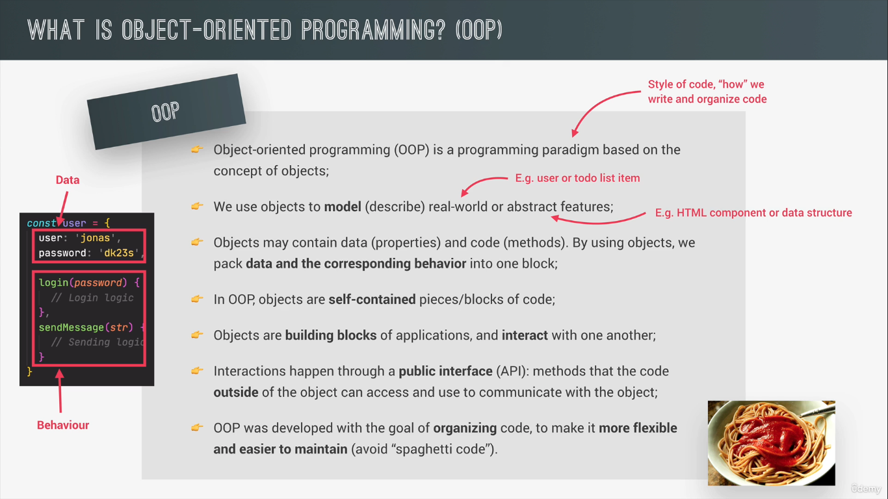
2. Classes and Instances
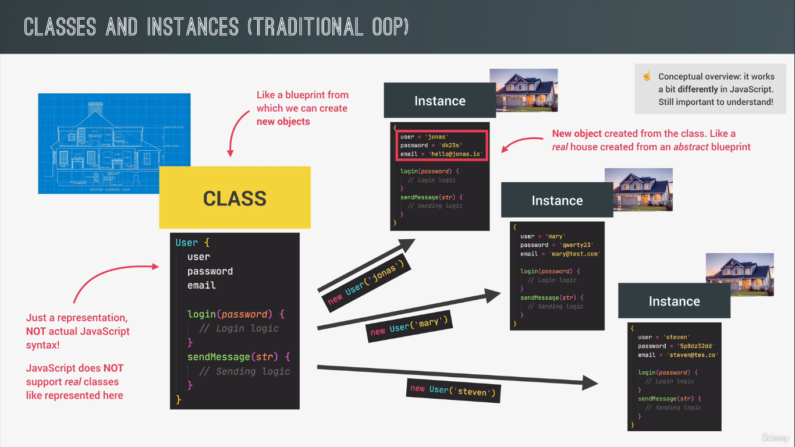
3. Fundamental OOP Principles
- Abstraction
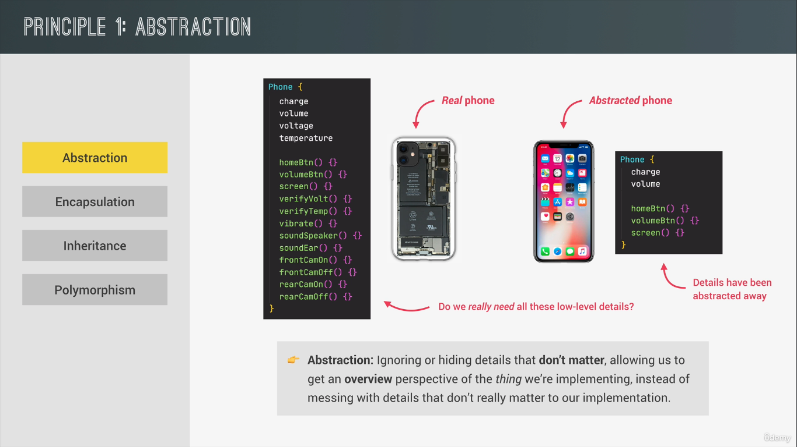
- Encapsulation
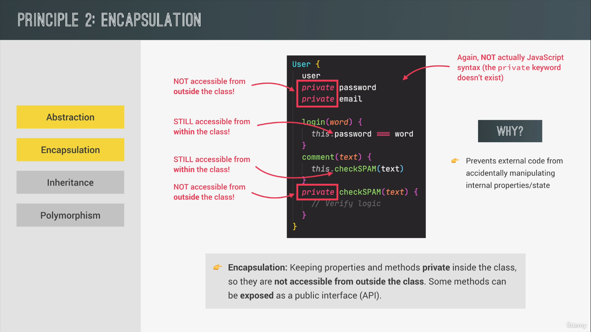
- Inheritance
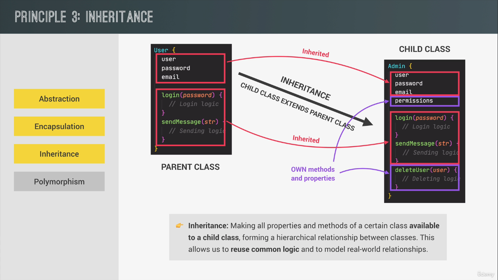
- Polymorphism
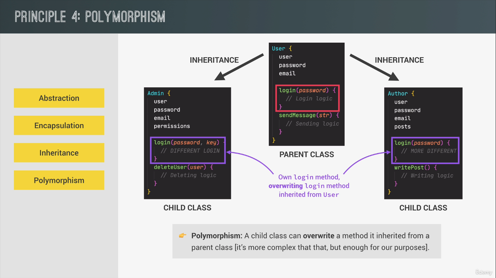
4. OOP in Javascript
- Concept of Prototypes
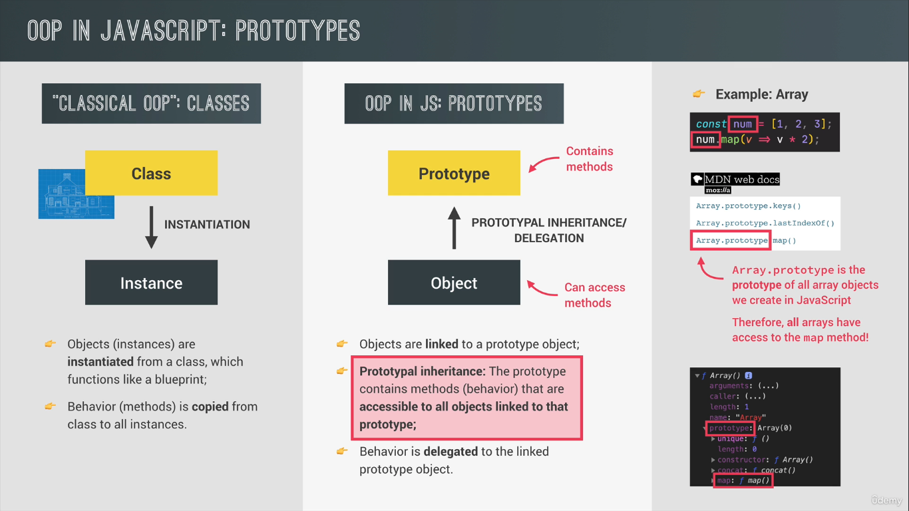
- Implementing Prototypal inheritance in Javascript
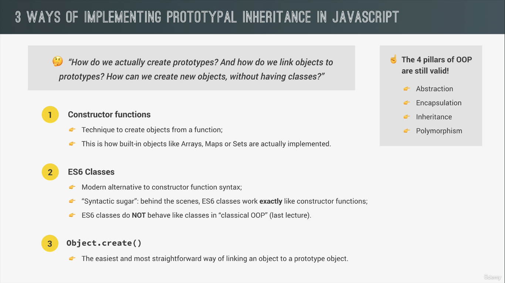
5. Constructor functions and the new operator
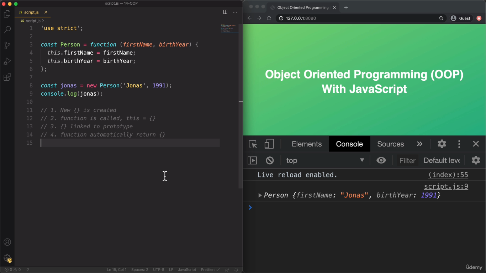
- A new empty object is created
- The function is called and the this keyword is updated to the empty object
- The newly created object is linked to the prototype
- The function automatically returns the object which was created in the beginning
- To check the instance, use instanceOf jonas instanceOf Person returns a boolean
- To declare methods don't create inside the constructor function, since it will create a copy of the function for all the objects which affects the performance
const Person = function (firstName, birthYear) { this.firstName = firstName; this.birthYear = birthYear; // avoid creating a method like this this.calcAge = function () { this.age = 2024 - this.birthYear; }; };
6. Prototypes
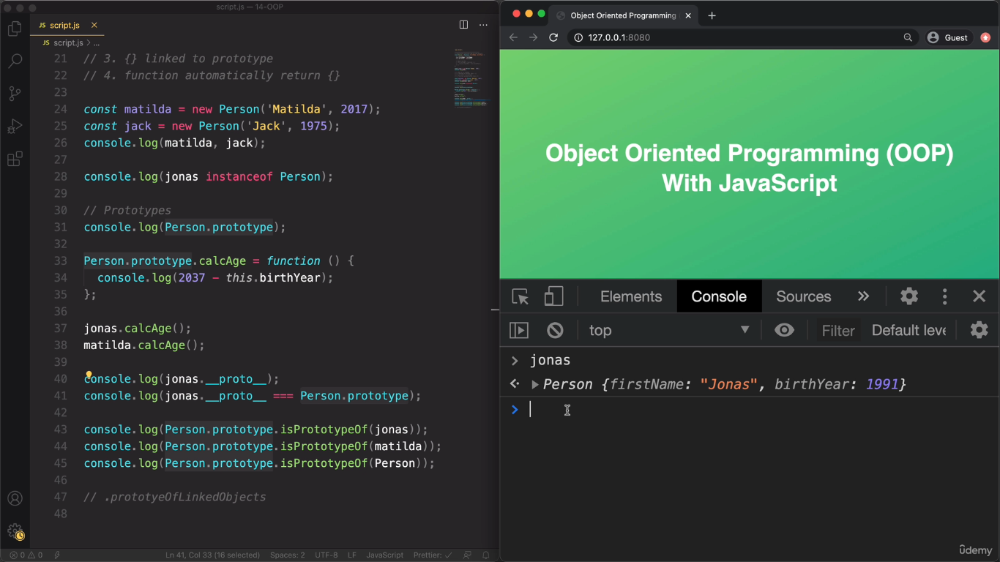
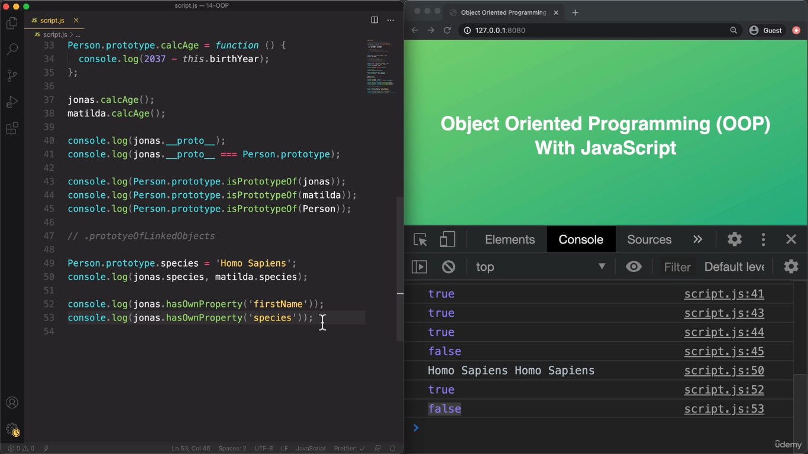
7. Prototypal Inheritance and the Prototype Chain
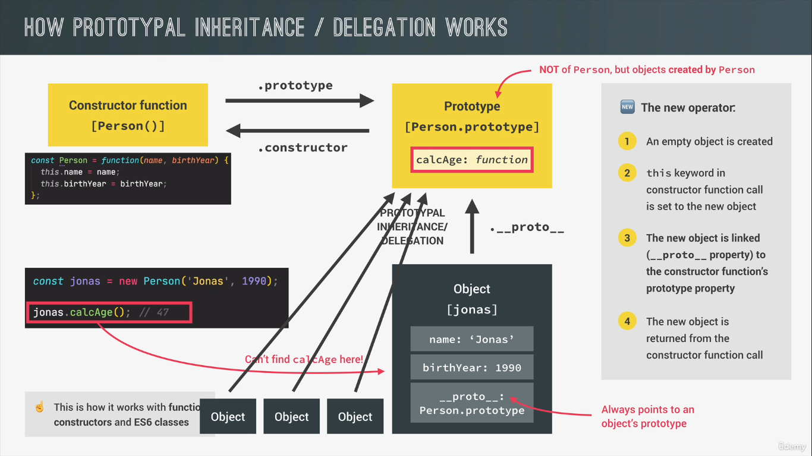
- The jonas object and the prototype forms a prototype chain
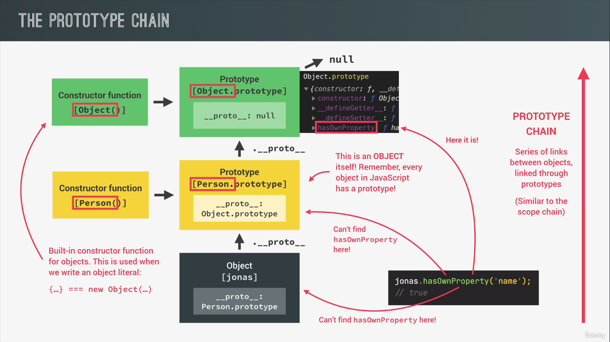
8. Prototyplal Inheritance on build in objects
- Prototype chain in objects and class
console.log(mano.__proto__); // prototype of the class console.log(mano.__proto__.__proto__); // prototype of the object on the top level console.log(mano.__proto__.__proto__.__proto__); // returns null console.log(Person.prototype); // prototype of the class console.log(mano.hasOwnProperty('firstName')); // hasOwnProperty is from the prototype of the top level object due to prototype chain
- Prototype chain in arrays
const arr = [2,3,4,5,6,7]; console.log(arr.__proto__); console.log(Array.prototype); console.group(arr.__proto__ === Array.prototype);
- Prototype chain in an DOM element
const h1 = document.querySelector('h1'); console.log(h1.__proto__); // HTML Heading Element console.log(h1.__proto__.__proto__); // HTML Element console.log(h1.__proto__.__proto__.__proto__); // Element console.log(h1.__proto__.__proto__.__proto__.__proto__); // Node console.log(h1.__proto__.__proto__.__proto__.__proto__.__proto__); // Event Target console.log(h1.__proto__.__proto__.__proto__.__proto__.__proto__.__proto__); // Object at the top console.log(h1.__proto__.__proto__.__proto__.__proto__.__proto__.__proto__.__proto__); // null
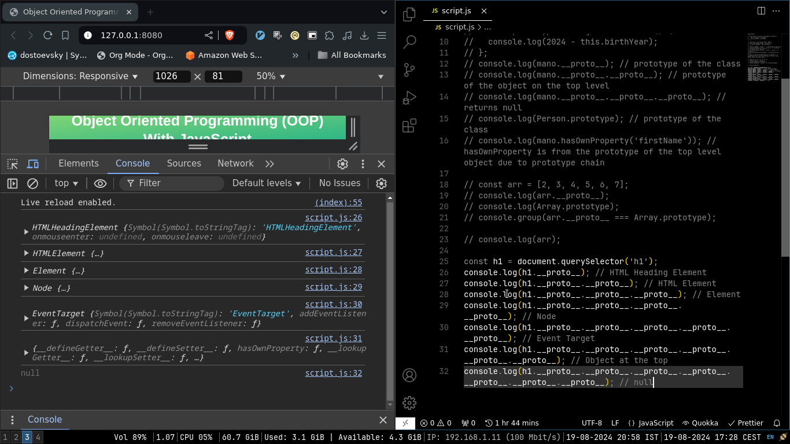
9. ES6 Classes
// class expression class Person = class{}; // class declaration class Person{};
class Person { constructor(firstName, birthYear) { this.firstName = firstName; this.birthYear = birthYear; } calcAge(){ return 2024-this.birthYear; } } const mano = new Person('Mano', 2000); console.log(mano.calcAge());
- Classes are not hoised and hence they should be defined before creating an instance.
- Classes are also treated as first class functions and hence they can be passed to other functions and returned by other functions. That's possible because classes are just a different type of functions behind the scenes.
- Classes are by default executed in strict mode.
10. Getters and Setters
- Setters and getters in normal objects and it works in the sameway as in normal objects
const accounts = { name: 'Jonas', movements: [10,24,5,3,345,43], get latest(){ return this.movements.slice(-1).pop(); }, set movement(x){ this.movements.push(x); } } // getter function is not called at all, its been used as a data in an object console.log(accounts.latest); // returns 43 // setter function should have atleast one argument accounts.movement = 10; console.log(accounts); // [10, 24, 5, 3, 345, 43, 10]
- In objects. Understand how they work in properly, there is a nuance in it
class Person { constructor(firstName, birthYear) { this.firstName = firstName; this.birthYear = birthYear; } calcAge() { return 2024 - this.birthYear; } set firstName(name){ this._firstName = name; } get firstName(){ return this._firstName; } }
11. Static Methods
- The methods are implemented on the object's constructor rather than instance of the object.
class Person { constructor(firstName, birthYear) { this.firstName = firstName; this.birthYear = birthYear; } calcAge() { return 2024 - this.birthYear; } set firstName(name){ this._firstName = name; } get firstName(){ return this._firstName; } } Person.hey = function(){ console.log("Hello There"); console.log(this); // this keyword will be point out to the object calling the method as always } Person.hey(); // it works since its defined on the constructor const mano = new Person('Mano', 2023); mano.hey(); // function is not defined in the prototype of the Person class and hence it cannot inherit it
- The static function can also be defined inside the class with the static keyword
class Person { constructor(firstName, birthYear) { this.firstName = firstName; this.birthYear = birthYear; } calcAge() { return 2024 - this.birthYear; } set firstName(name){ this._firstName = name; } get firstName(){ return this._firstName; } static hey(){ console.log('hello'); } }
12. Object.create
- It works in a pretty different way than constructor functions and classes.
- We do have the concept of prototypal inheritance here as well however there are no prototype properties involved, also no constructor functions and no new operator.
- Object.create can be used to manually set the prototype of an object to any other object we want.
const PersonProto = { calcAge() { console.log(2024 - this.birthYear); }, }; const mano = Object.create(PersonProto); mano.birthYear = 2000; mano.calcAge();
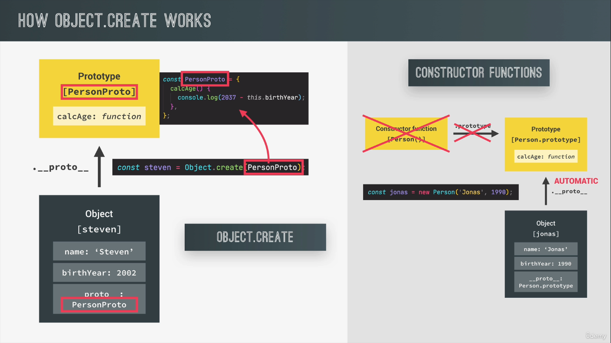
const PersonProto = { calcAge() { console.log(2024 - this.birthYear); }, // the proper way of defining a variable inside the prototype init(firstName, birthYear){ this.firstName = firstName; this.birthYear = birthYear; } }; const mano = Object.create(PersonProto); mano.init('Mano', 2000); mano.calcAge();
13. Inheritance between Classes: Constructor's functions
// Person class const Person = function (firstName, birthYear) { this.firstName = firstName; this.birthYear = birthYear; }; Person.prototype.calcAge = function () { return 2000 - this.birthYear; }; // Student class const Student = function (firstName, birthYear, course) { Person.call(this, firstName, birthYear); this.course = course; }; Student.prototype.intro = function () { console.log(`hello I am ${this.firstName}`); }; const mano = new Student('mano', 2024, 'cs'); console.log(mano);
- We can create inheritance using the object.create property
Student.prototype = Object.create(Person.prototype);


const Car = function (make, speed) { this.make = make; this.speed = speed; }; Car.prototype.accelerate = function () { return (this.speed += 10); }; Car.prototype.brake = function () { return (this.speed -= 5); }; const EV = function (make, speed, charge) { Car.call(this, make, speed); this.charge = charge; }; EV.prototype = Object.create(Car.prototype); EV.prototype.chargeBattery = function (chargeTo) { return (this.charge = chargeTo); }; EV.prototype.accelerate = function () { this.speed += 20; this.charge -= 1; }; const tesla = new EV('Tesla', 120, 100); tesla.accelerate(); tesla.accelerate(); tesla.brake(); console.log(tesla); // { "make": "Tesla", "speed": 155, "charge": 98 }
14. Inheritance between Classes: ES5 Classes
class Person { constructor(firstName, birthYear) { this.firstName = firstName; this.birthYear = birthYear; } calcAge() { return 2024 - this.birthYear; } set firstName(name) { this._firstName = name; } get firstName() { return this._firstName; } static hey() { console.log('hello'); } } class Student extends Person { constructor(firstName, birthYear, course) { // always this following line needs to happen first since it sets the this keyword super(firstName, birthYear); this.course = course; } }
15. Inheritance between Classes: Object.create
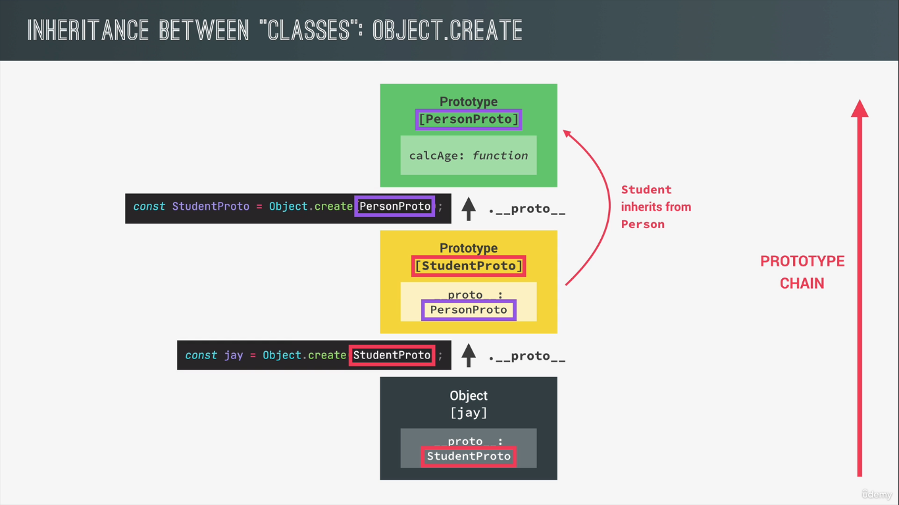
const PersonProto = { calcAge() { console.log(2024 - this.birthYear); }, // the proper way of defining a variable inside the prototype init(firstName, birthYear) { this.firstName = firstName; this.birthYear = birthYear; }, }; // creating a new Person const mano = Object.create(PersonProto); // Student inheriting Person const StudentProto = Object.create(PersonProto); // creating a new Student const manoStudent = Object.create(StudentProto); manoStudent.init('Mano', 2000); manoStudent.calcAge();
const PersonProto = { calcAge() { console.log(2024 - this.birthYear); }, // the proper way of defining a variable inside the prototype init(firstName, birthYear) { this.firstName = firstName; this.birthYear = birthYear; }, }; // creating a new Person const mano = Object.create(PersonProto); // Student inheriting Person const StudentProto = Object.create(PersonProto); // creating a new Student const manoStudent = Object.create(StudentProto); manoStudent.init('Mano', 2000); manoStudent.calcAge(); // adding a new function to StudentProto StudentProto.init = function(firstName, birthYear, course){ PersonProto.init.call(this, firstName, birthYear); this.course = course; } manoStudent.init('Mano', 2012, 'CS');
16. Encapsulation: Protected properties and methods
- By default, JS doens't suppport private properties and methods. Its still in development.
- Hence the JS devs use a convention in which the properies and methods which they want private starts with an underscore indicating that it should be private and shouldn't be accessed outside the class.
- Its just a convention being followed by the DEV's and you can still access the properties and the methods outside the Class.
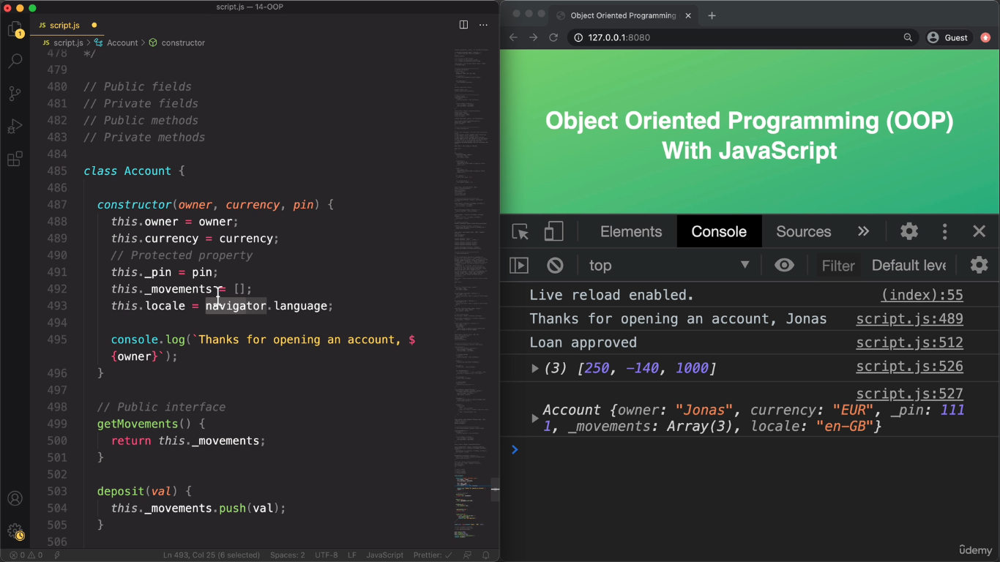
17. Encapsulation: Private Class fields and methods
17.1. Public Fields
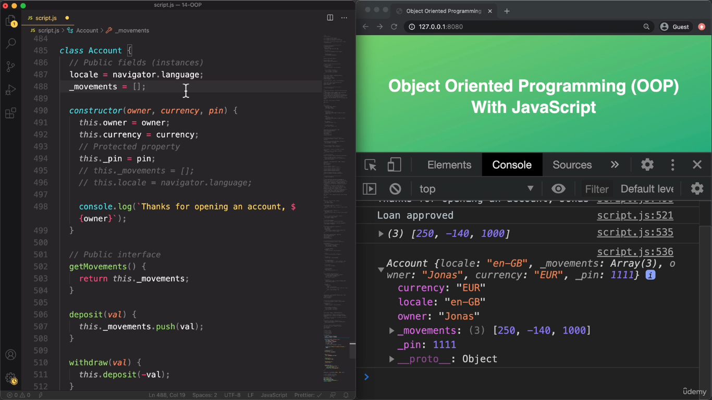
17.2. Private fields
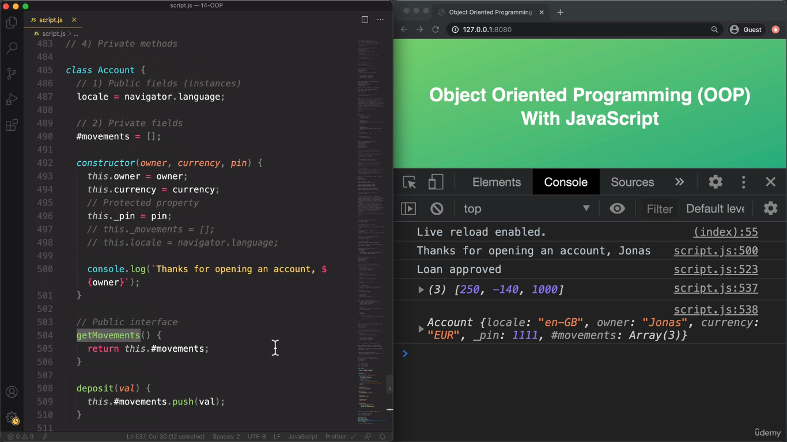 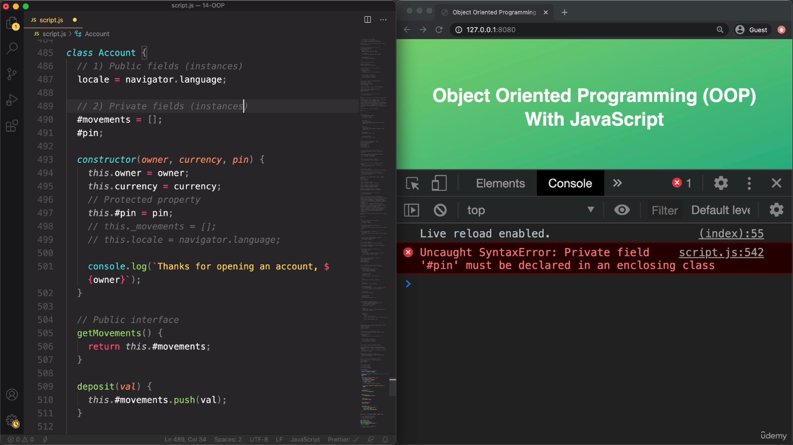
17.3. Private methods
- Most browsers doesn't support it yet
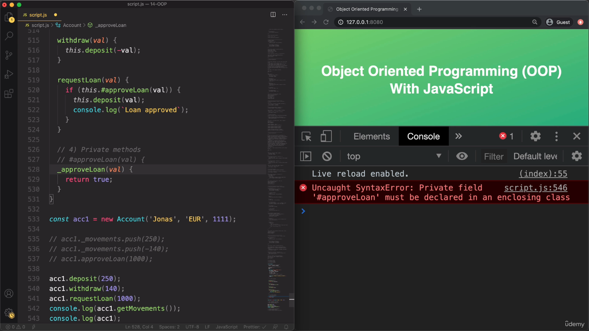
18. Chaining Methods
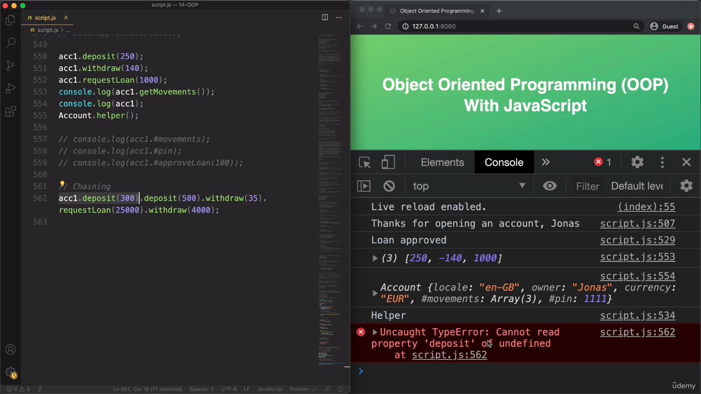 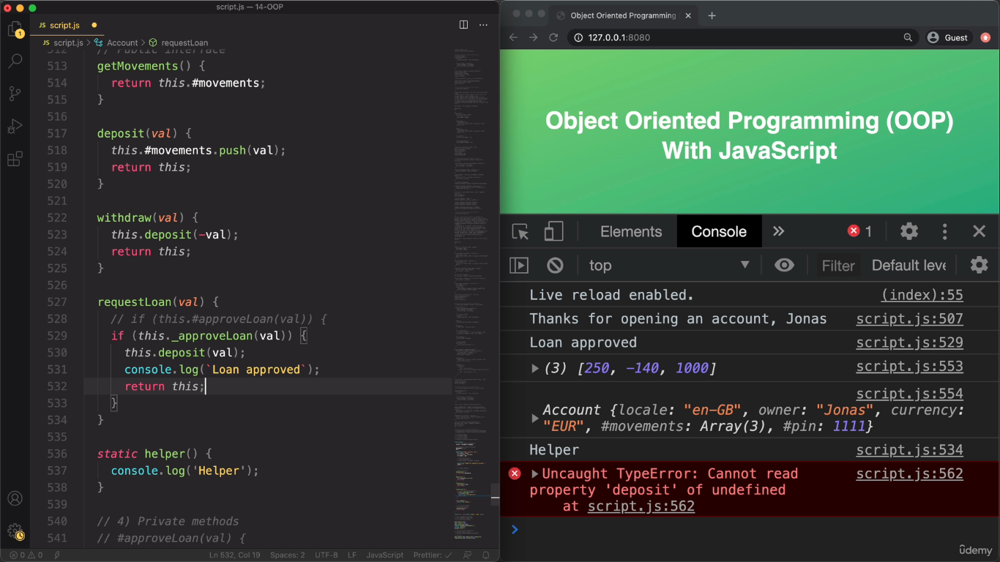
19. Summary
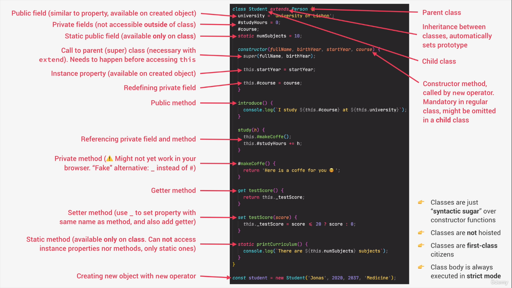
20. Sample class
class CarCl { constructor(make, speed) { this.make = make; this.speed = speed; } accelerate() { this.speed += 10; } brake() { this.speed -= 5; } } class EVCl extends CarCl { #charge; constructor(make, speed, charge) { super(make, speed); this.#charge = charge; } accelerate() { this.speed += 20; this.#charge -= 1; return this; } brake() { this.speed -= 10; return this; } } const tesla = new EVCl('Tesla', 120, 23); // tesla.accelerate(); // console.log(tesla); // tesla.accelerate(); // tesla.brake(); // console.log(tesla); tesla.accelerate().accelerate().brake(); console.log(tesla);